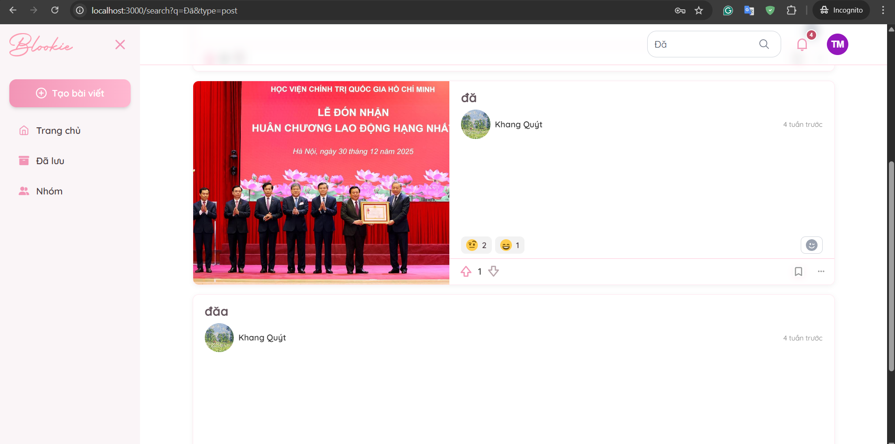
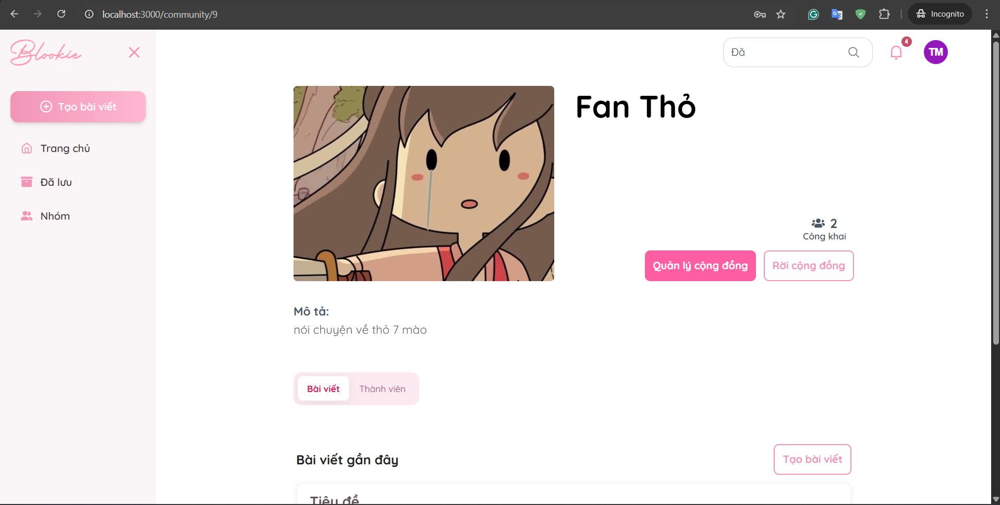
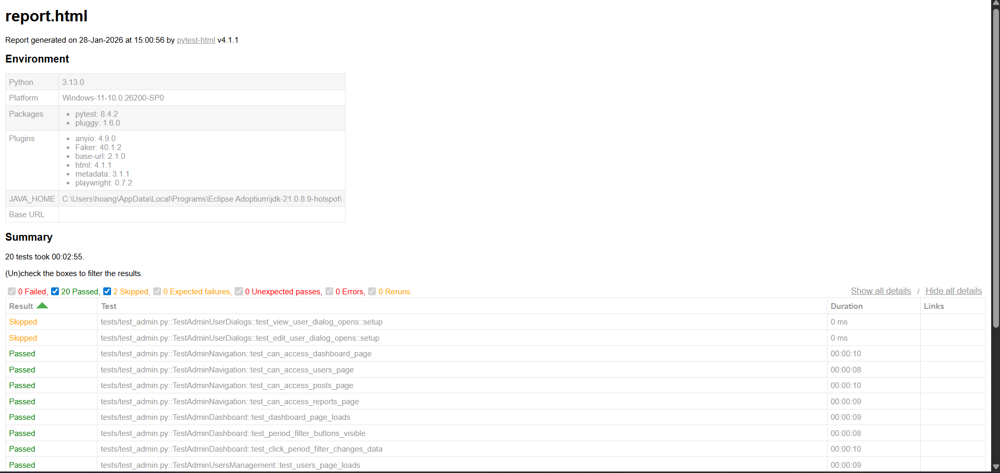
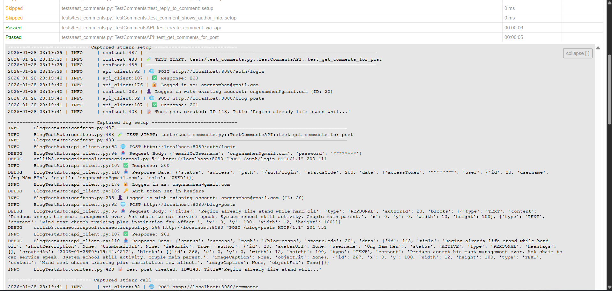
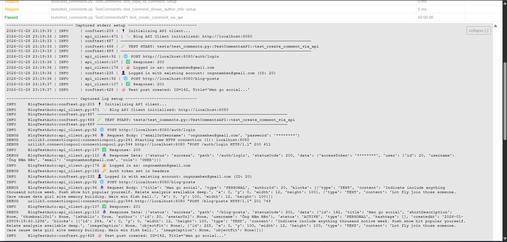
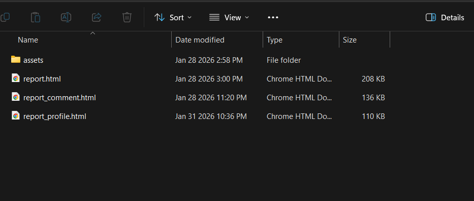

Blookie Website Tester
Project Overview
A comprehensive automation testing framework for Blog Websites built with Playwright + Pytest using the Page Object Model (POM) architecture. This framework provides end-to-end testing for authentication, posts management, comments, user profiles, search functionality, and admin panel.
Video Demo
Full automation testing demo of Blookie Blog Website
10+
Test Suites
50+
Test Cases
POM
Architecture
HTML
Reports
Blookie Blog Website

Blookie Blog Website - Homepage with news feed

Post detail page with comments section
HTML Test Reports

Detailed HTML test report with test results summary

Test case details with passed/failed status

Full test execution report with logs
Project Structure

Logs folder with detailed execution logs

Reports folder with HTML reports
Key Features
- Authentication Tests: Login, Register, Password validation
- Posts Management: Create, Edit, Delete, View posts
- Comments System: Add, Reply, Delete comments
- User Profile: Edit profile, Avatar upload
- Search Functionality: Search posts, Filter by category
- Admin Panel: User management, Posts moderation, Reports
- Newsfeed: Voting system, Post cards, Infinite scroll
- Navigation: Sidebar, Header, Footer tests
Test Suites
| Test File | Description |
|---|---|
test_auth.py |
Login, Register, Authentication flows |
test_posts.py |
Post creation, editing, deletion |
test_comments.py |
Comment CRUD operations |
test_profile.py |
User profile management |
test_search.py |
Search functionality tests |
test_admin.py |
Admin panel management |
test_newsfeed.py |
Newsfeed and voting tests |
test_navigation.py |
Navigation components |
Test Markers
| Marker | Description |
|---|---|
smoke |
Quick smoke tests |
regression |
Full regression suite |
auth |
Authentication tests |
posts |
Blog post tests |
comments |
Comment system tests |
admin |
Admin panel tests |